Item title, right justified, in bold, with no trailing punctuation
Blurb.
If a small image sheds light, place it below the description, in a separate paragraph. Screen snapshots should be done at 1152x864 resolution on Windows XP with default theme, default fonts, and default font size. Crop out any extraneous stuff to focus the reader's attention on your new feature. The image should be no more than 466 pixels wide and in GIF format (not TIF, not BMP, not JPG) with an exact palette (not web) so as to properly capture the gradient shading in the borders. Name the file is a way that is appropriate and specific to the item (e.g., key-bindings.gif, rather than something generic like image.gif).
Switching perspective on launch
You can now control which perspective gets opened when a program is launched. These setting are available on the launch dialog when a launch configuration type is selected.
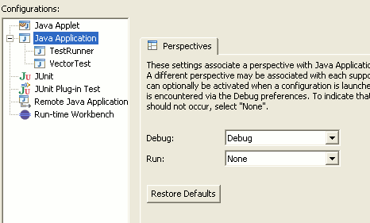
Debugging in current perspective
Debugging can now be performed in any perspective. When a breakpoint is encountered you will be prompted to switch to the Debug perspective. If you choose to remain in the current perspective, the Debug view and action set will be opened allowing you to start debugging.
You can configure the debugger to open debug-related views (Variables, Breakpoints, etc.), in non-debug perspectives via the Run/Debug > View Management preference page (also available from the drop-down menu in the Debug view).
Disabling breakpoints
The Breakpoints view now has checkboxes for quickly disabling and re-enabling breakpoints:
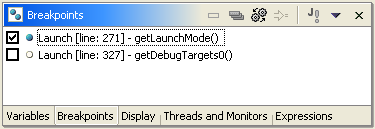
Skipping breakpoints
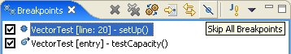
Workspace is checked for breakpoints before launching in run mode

Filters for arrays
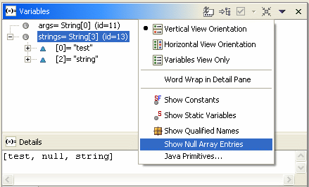
Setting variables in variables view
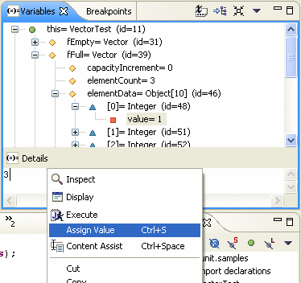
Highlighting of lines in execution call stack
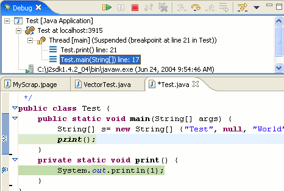
Launching from context menu
Launch shortcuts are now available in the context menu of all applicable views - Navigator, Outliner, etc. Run and Debug are now separated into different submenus. The JUnit shortcut allows you to select and launch a single test method.
An Ant build can be invoked from the Run context menu. You can run the entire build file, or open a dialog to select specific targets. You can also select and run individual targets from the Ant editor outline and Ant view.
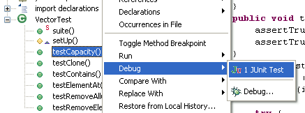
More support for string substitution variables
Environment variables
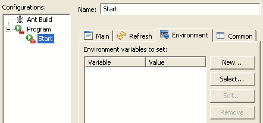
Working sets for external tool builders
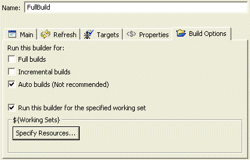
Project builders can be disabled and re-enabled via checkboxes on the Builders project property page.
Run Ant in a separate JVM
Ant View improvements
Ant-specific problems in buildfile
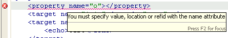
Ant editor text hovers
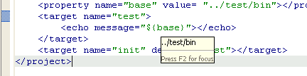
Formatter for Ant buildfiles
Ant errors in Problems view
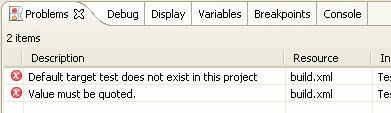
Ant code assist proposals for custom tasks and types
More filtering options in Ant editor outline

Ant editor outline support for working with imported elements
Extension point support for Ant build in separate VM
Ant preference pages give previews
The Ant > Editor preference pages now have a preview viewer that lets you see the effects of the various preference settings.
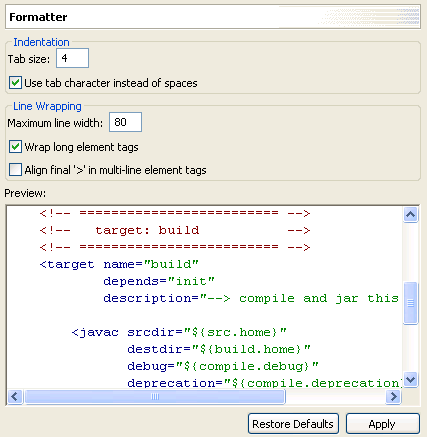
Full template support for Ant
You can add, remove, and edit the set of Ant templates that will be provided as code assist proposals. See the Ant > Editor > Templates preference page.
New Synchronize View
The Synchronize View has changed significantly since 2.1. Here is a short list of the new features:
- Multiple synchronizations can appear in the view. A dropdown action allows navigating between them.
- The view dynamically updates when changes are made to the workspace. This means that you don't have to synchronize to browse outgoing changes.
- There are new helpful decorations: problem markers are displayed, conflicts are propagated to parents, and when a background operation is working on an element in the view it will show a busy indicator on the item.
- You can configure a synchronize to periodically run in the background.
- There are new layouts: hierarchical, compressed folders, commit sets.
CVS operations run in the background
CVS operations have been enabled to run in the background. This means that you can spend more time working and less time looking at the synchronize, update, compare, and checkout progress dialogs.
CVS Checkout Wizard
Both the New > Project and File > Import commands now let you checkout a project from a CVS repository. Besides being convenient, it is especially useful for checking out projects from CVS repositories that don't support browsing.
CVS Commit Sets
The CVS Synchronize view now lets you review changes grouped logically by commit comment, committer, and date. This presentation is selected by the Layout > Commit Sets found on the drop down menu of the CVS Synchronize View.
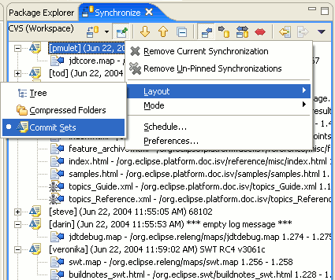
CVS Date Tags
What was released in HEAD at midnight last Thursday? You can now use date tags to compare, checkout, merge, or simply browse a CVS repository. You can add date tags from either the CVS Repositories view or from any tag selection page.
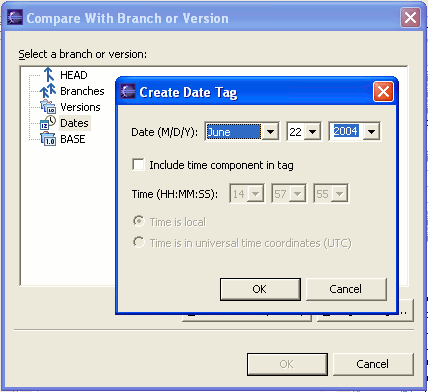
CVS History Linking
The CVS History View now has a Link with Editor toggle button. When linked, the revision history of the file currently being edited is automatically fetched (in the background) and displayed. This works not only for regular file editors but also for compare and remote revision editors opened from CVS-specific views.
CVS Quick Diff
You can now configure your text editor to show changes from the latest revision in the CVS repository. Not only can you see your changes, you can back out of them without leaving your editor. You turn this feature on with the Select Quick Diff Reference command found in the context menu for the left-hand ruler of a text editor; choose Latest CVS Revision.
CVS SSH2 Support
The extssh CVS connection method now supports connecting to CVS servers running SSH2. The Team > CVS > SSH2 Connection Method preference page also allows you to create and manage your SSH2 keys.
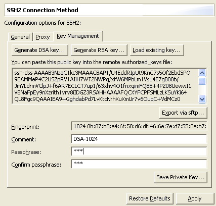
Blame a co-worker for a change
Have you ever wanted to see who made a particular change in a file? When you run Team > Show Annotation the Annotate View will show you the list of authors for each line in the file and as you browse the file the Annotate View will update to highlight the user that modified the current line. The CVS History view will also automatically update so that you can see the commit comment for the particular lines.
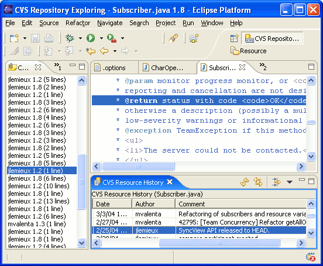
New search view
The new search view runs searches in the background and shows the results in either tree or table form.
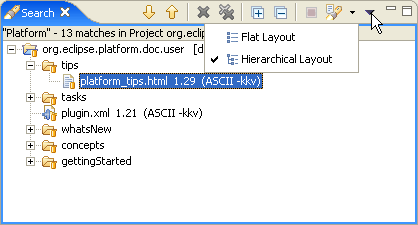
Regular expressions in File Search page
The File search page now supports regular expressions. Use F1 to get an overview of the regular expression syntax.
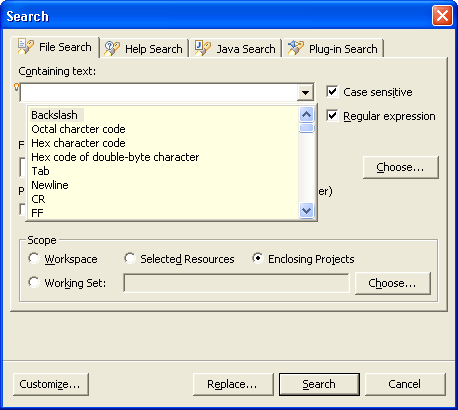
Search in enclosing projects
Searches can now be scoped to resources in the projects enclosing the selected elements. The new option shows up on search pages that support this new feature.
Streamlined global text replace
The Replace dialog also supports Replace All in File and Replace All. When invoked from the context menu of the Search view the Replace action can either act on all current search results or on the selection in the Search view.
The Replace dialog additionally supports regular expressions.
The Search dialog for text searches now shows a Replace button that invokes the Replace dialog.
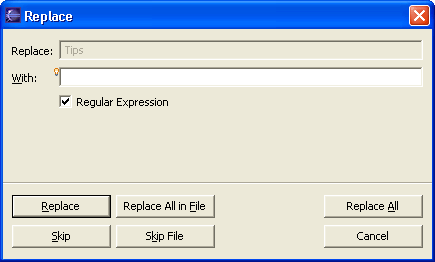
Color preferences for compare/merge
Quick Diff: colored change indication in editor vertical ruler
A new color-coded change indicator in the editor's vertical ruler can
be turned on for text editors using either the ruler context menu or CTRL+SHIFT+Q.
The colors show additions, deletions, and changes to the editor buffer as
compared to a reference, for example, the contents of the file on disk or
its latest CVS revision.
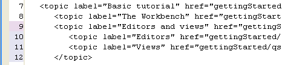
When the mouse cursor is placed over a change in the vertical ruler, a hover displays the original content:
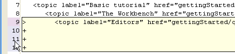
The original content can be restored using the ruler's context menu. The context menu also allows to switch between references and enable/disable Quick Diff:
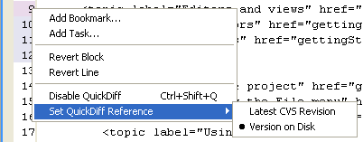
Due to the high memory consumption of the diff algorithm, Quick Diff suspends itself when there are overly many changes between the current and the reference file. This avoids putting the system under memory pressure and is indicated by a single change spanning the whole file with an empty original text in the hover on the change ruler column.Quick Diff is reset to normal operation by disabling and re-enabling it (for example by pressing Ctrl+Shift+Q twice).
Quick Diff results in overview ruler
The differences between the displayed document and a reference document (for example, the saved file or latest revision from CVS) can be configured to show up in the right-hand overview ruler.
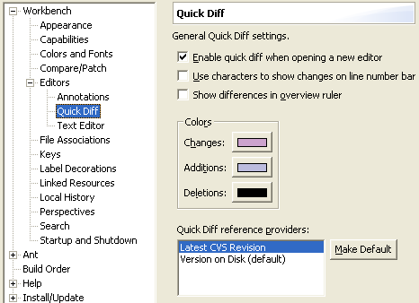
Quick Diff settings when opening new editors can be configured on the Workbench > Editors > Quick Diff preference page.
Regular expressions in Find/Replace dialog
The Find/Replace dialog for text editors now supports searching and replacing using regular expressions. Press F1 to get an overview of the regular expression syntax, and press Ctrl+Space to get Content Assist for inserting regular expression constructs.
When the cursor is placed in a dialog field, that is supported by Content Assist, a small light-bulb above the upper-left corner of the field indicates its availability.
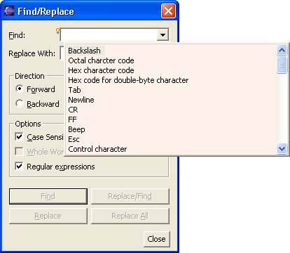
Shared annotations preferences
There is a new preference page Workbench > Editors > Annotations for configuring annotations for all text-based editors.

Note: Due to this change, existing annotation preference settings for the editors converted to use the shared settings will revert to the default settings when an existing workspace is opened for the first time with Eclipse 3.0.
New annotation preferences
Besides using squiggly underlining, annotations can also be shown in the editor using background highlighting. Check Highlight in text on the preference page to enable background highlighting of annotations.
The visibility of annotations in the vertical ruler can be controlled by checking Show in vertical ruler on the annotations preference page.
Non-uniform file encodings
Multiple different encodings are now supported at the same time. Eclipse will automatically determine the correct encoding for many kinds of files. Failing that, you can explicitly set a specific encoding at the project, folder, or file level from the resource's Properties dialog.
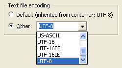
New text editor functions
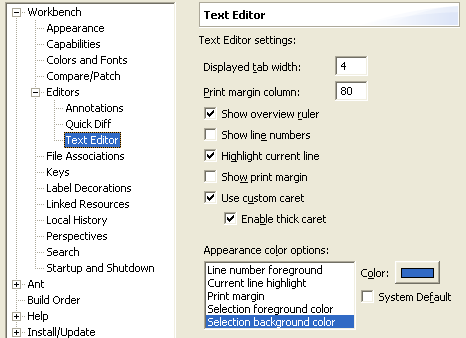
New editor functions
All text editors based on the Eclipse editor framework support new editing functions, including moving lines up or down (Alt+Arrow Up and Alt+Arrow Down), copying lines (Ctrl+Alt+Arrow Up and Ctrl+Alt+Arrow Down), inserting new a line above or below the current line (Ctrl+Shift+Enter and Shift+Enter), and converting to lowercase or uppercase (Ctrl+Shift+Y and Ctrl+Shift+X).
Double clicking on the line number in the status line is the same as Navigate > Go to Line... (Ctrl+L).
Dynamic, standards based runtime
The Eclipse runtime has been modified to run on top of an implementation of the OSGi framework specification (see osgi.org). This move increases the runtime's flexibility and paves the way for the use of Eclipse in a wider range of scenarios and environments. By choosing a standard base for the runtime, Eclipse developers are able to reuse existing function and infrastructure. Regular Eclipse users benefit from these changes as the runtime is now dynamic. New plug-ins can be installed into a running Eclipse and used without restarting.
A number of changes have occurred in the UI to support a higher level of responsiveness. This includes support for running jobs in the background instead of tying up the UI and having to wait.
What has been added:
- Progress view
- status line entry showing what's running in the background
- dialog for showing operations that can be optionally run in the background
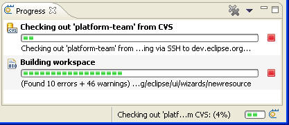
The Platform has provided additional ways for controlling workbench clutter allowing Eclipse based products to scale down what the user sees in the UI for various reasons.
What has been added:
- Capabilities, allows filtering of currently unneeded functions
- ability to dynamically add UI components (based on OSGI runtime)
- ability to conditionally contribute to menus and toolbars based on the type of object selected (for example the "Run> Ant Build..." option should only appear on XML files which contain an Ant script).
See also: https://bugs.eclipse.org/bugs/show_bug.cgi?id=37929
Eclipse now includes the Rich Client Platform (RCP). Eclipse was designed as a universal tool integration platform. However, many facets and components of Eclipse are not particularly specific to IDEs and make equal sense in non-IDE applications. The rich functionality in the Eclipse plug-in architecture, runtime, and workbench can now be leveraged in building arbitrary applications.
Here is a snapshot of a simple web browser implemented using the Eclipse RCP:
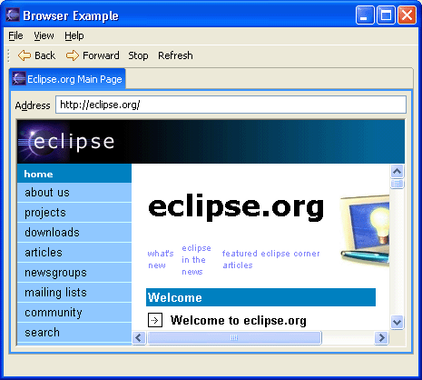
For more details, see:
http://dev.eclipse.org/viewcvs/index.cgi/%7Echeckout%7E/platform-ui-home/rcp/index.html
Fast view support has undergone some significant changes:
- support for left/bottom/right docking of the fast view bar
- support for vertical and horizontal orientation of views when made a fast view
- improved drag and drop feedback for creating fast views and moving the fast view bar
A number of changes and enhancements have gone into the editor management in Eclipse.
What has been done:
- support for single and multiple editor tabs
- single is especially usefull for those who tend to have many files open or who like using the keyboard to navigate editors
- affordance for editor pinning. When limiting the number of editors that can be opened at once, some editors that should not be closed can be pinned, there is now an affordance to indicate when an editor is pinned
- chevrons have been added to handle the overflow of editors with an extra indication of how many more editors are open then there are tabs on the screen
- new menu options, keyboard shortcuts and keybindings available for editor management
- Close Others - close all editors but the current
- Close All - menu option available
- Ctrl + e - dropdown list of editors supports type ahead
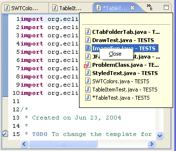
See also: https://bugs.eclipse.org/bugs/show_bug.cgi?id=37670
Key bindings have been improved in the following ways:
- key bindings are supported in Dialogs
- help with matching multi-key shortcuts
- minor tweaks to the key binding mappings
Background workspace auto-refresh
Changes made in the local file system can now be automatically refreshed in the workspace. This saves you from having to do a manual File > Refresh every time you modify files with an external editor or tool. This feature is currently disabled by default, but can be turned on from the Workbench preference page (the Refresh Workspace Automatically option).
Simplified manual build commands
The set of available build commands in the Project menu has been simplified. The confusing Rebuild All and Rebuild Project commands have been replaced with a single Clean... command. The Build Project command in the Project menu (and in context menus) has been made smarter. It will now also build out-of-date prerequisite projects of the selected project if necessary. A new Build Working Set sub-menu lets you choose a set of projects to be built; this command brings all projects in that working set up to date, building any prerequisite projects that are not in the working set if (and only if) required.
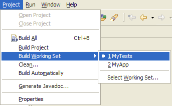
Dynamic help documents
Plug-ins can now contribute "content producers" to the help system's org.eclipse.help.contentProducer extension point. A content producer has an opportunity to dynamically generate documents which would otherwise be read as static content.
Refreshed Help look
The look of the Help UI has been updated to match the rest of the workbench.
Help index moved to configuration area
Capability-based filtering of help
Maximizing help views
Maximize and restore buttons have been added to the toolbars of help views.
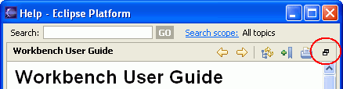
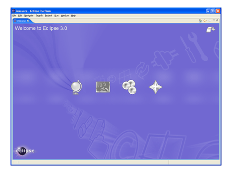
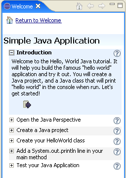